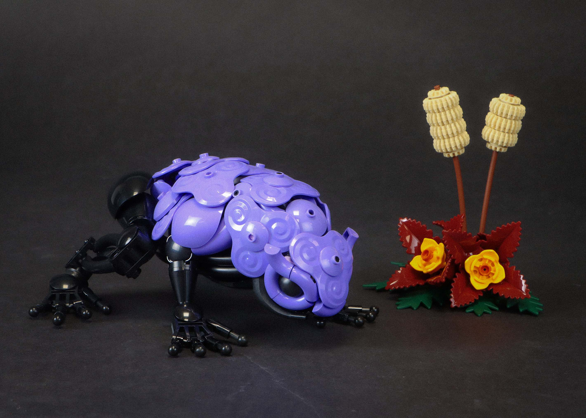
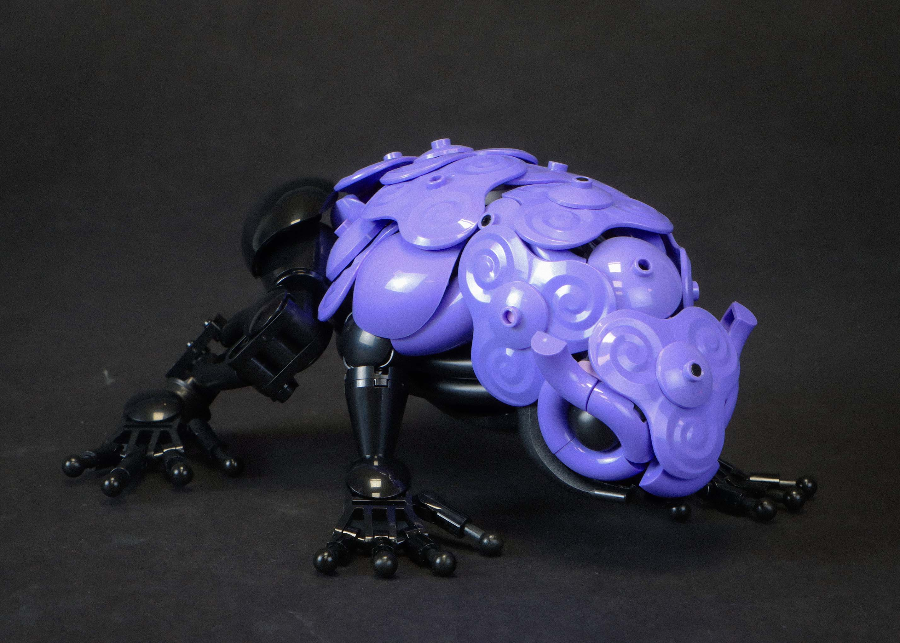

gum gum frog

Another themed month build, this time for Frogust. With recent releases, more blue-violet parts have entered the catalog. The One Piece Gum-Gum Fruit introduced a strange, fidget spinner dish in this new color, and I wanted to see if I could make something with it.
poisonous direction
The combination of color and texture of the dish read as something poisonous, so I wanted to lean into that direction. I based the frog design on poison dart frogs, and used black as the secondary color. A lot of poison dart frogs have a sort of dotted pattern throughout their body, but I felt that would not translate well into Lego and ruin the readability of the creature. Therefore, I followed a bit stricter color blocking in keeping the upper body blue-violet and the lower body black. To still further bring out the poison detail, I spammed more of the one piece dish as well as similarly shaped/textured pieces. One last detail I added was the little horns above the eyes. Frogs have raised eye ridges, and I initially couldn't quite get the shape I wanted due to part limitations. The semicircle cut-off on the horns gave the appearance of smokestacks (like the pores on kanto Weezing), which I felt further contributed to the poison idea.
